量化是加速LLM推理的关键技术。但现有INT4量化方案有一个被忽视的问题：GPU上反量化的运行时开销高达20-90%，导致理论上的低精度加速比在实践中完全无法兑现。
MIT团队在QServe中提出了W4A8KV4精度组合（QoQ算法）+ 系统级协同设计，首次在数据中心GPU上实现了INT4量化端到端加速。在A100上比TensorRT-LLM的最优配置高1.2-2.4倍，在L40S上甚至超过TensorRT-LLM在A100上的吞吐。
论文首先通过Roof-line模型分析了不同精度组合的理论吞吐上限。对于LLM推理的解码阶段，当batch size较小时，GEMM是memory-bound，W4A16（权重小，内存占用低）表现更好；当batch size较大时，GEMM变成compute-bound，W8A8（INT8 tensor core吞吐量更高）更快。W4A8天然地能在所有batch size下兼顾两者的优势：只要所有计算能在INT8 tensor core上执行。
Roof-line分析还揭示了另一个维度：KV cache量化。Attention在解码阶段占50%+ 运行时间（batch=64时），Attention本质上是批量GEMV，计算强度恒为1 MAC/element，内存带宽由KV cache访问主导。KV4比KV8峰值性能翻倍，因此KV4对整个系统的加速潜力巨大。
但为什么不选更激进的W4A4？论文揭示了关键瓶颈：主循环反量化开销。在GPU的GEMM内核中，输出静止（output stationary）数据流有一个包含100多次迭代的顺序主循环。
W4A16需要将INT4权重反量化为FP16（在CUDA core上执行），W4A4（如Atom）需要将INT32部分和反量化为FP32（也在CUDA core上）。A100上CUDA core的峰值性能只有INT4 tensor core的2%：执行一次反量化相当于50个tensor core MAC的成本。此外，W4A4需要两套寄存器（FP32 + INT32），寄存器压力增大导致活跃warp数减少，进一步放大延迟隐藏问题。
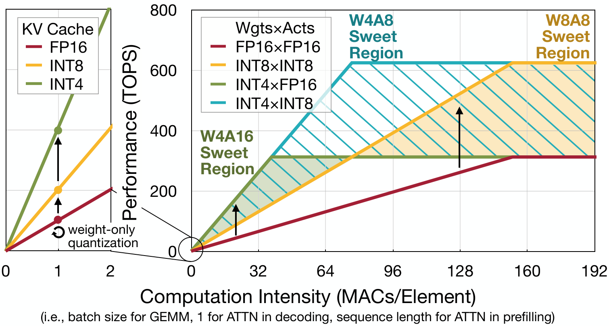
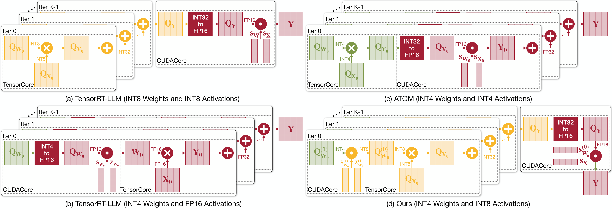
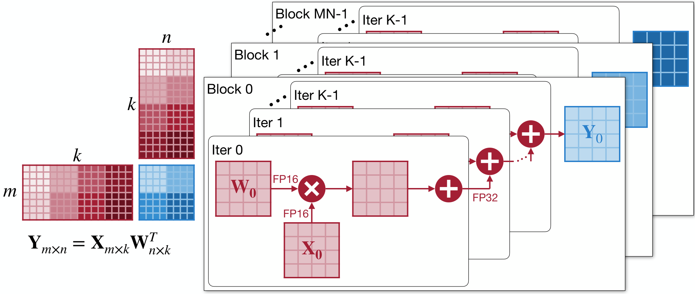
QoQ（Quattuor-Octō-Quattuor，拉丁语4-8-4）算法的核心设计是渐进式分组量化（Progressive Group Quantization）。传统W4A4需要per-group量化权重和激活，并在主循环内反量化INT32部分和。QoQ的做法是：
第一步，将权重先量化到8位（per-channel FP16 scale，带保护范围 [-119, 119]）。第二步，再将这8位中间值量化到4位。这种两级设计的关键好处是：所有GEMM计算都在INT8 tensor core上执行，主循环内没有反量化操作。
对于4位KV cache量化带来的精度损失，论文提出了SmoothAttention：将激活量化的挑战从Key转移到Query（Query不被量化），从而有效缓解精度下降。
在多种LLM（Llama-3、Qwen1.5、Mixtral等）上验证，W4A8KV4的精度几乎无损，困惑度退化小于0.5。相比W4A4方法（如QuaRot）有显著精度优势。
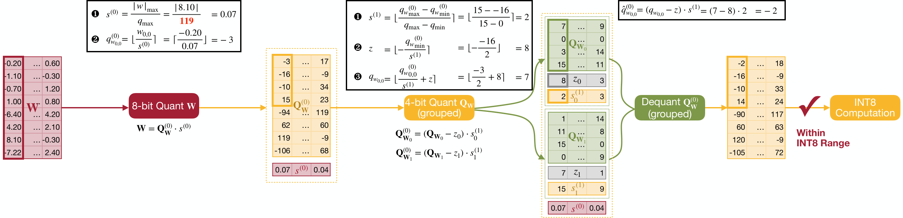
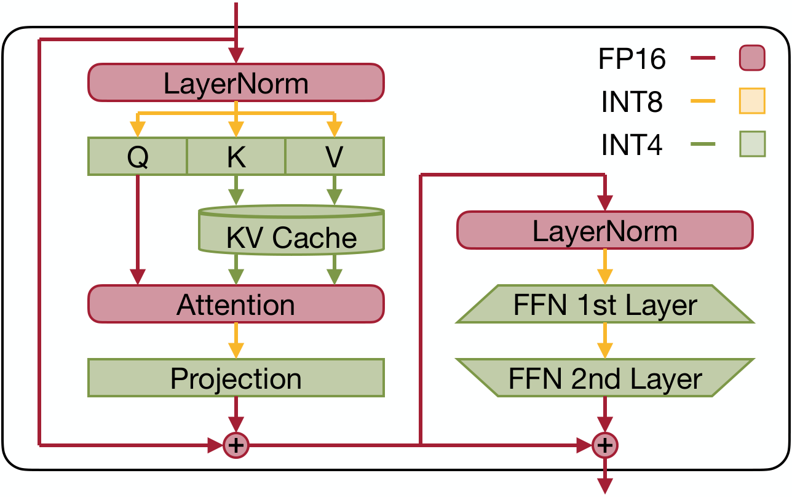
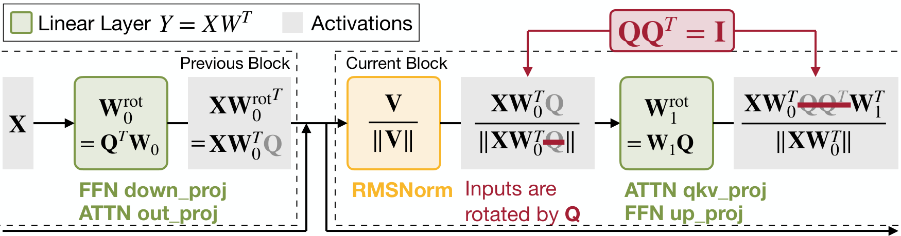
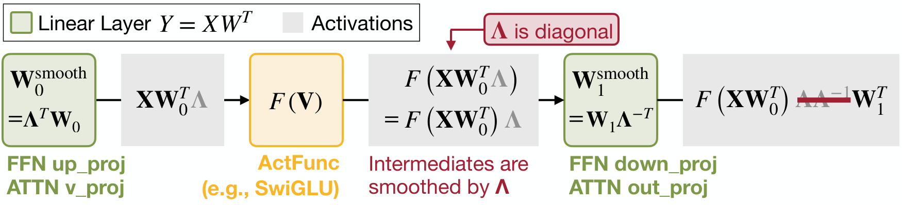
W4A8 GEMM面临一个微妙的GPU架构问题：ldmatrix指令在存储和计算数据类型不同时无法使用。因为Tensor Core GEMM intrinsics要求每个线程获得跨步内存布局（strided layout），而ldmatrix只能在存储和计算数据类型相同时自动完成数据分发。
当权重的存储类型为INT4、计算类型为INT8时，ldmatrix会按字节数而不是元素数分发数据，导致线程0拿到自己和线程1的数据，线程1拿到线程2和3的数据：数据与计算需求不匹配。
解决方案非常直接：按计算时的使用顺序重新排列权重。将整个GEMM问题划分为32×32的tile，把每个线程需要使用的32个输入通道拼接成一个128-bit字连续存储。由于权重是静态的，这种重排不会引入运行时开销。它不仅将指针运算开销降到与ldmatrix相同的水平，还保证了128-bit/thread的高带宽内存传输。
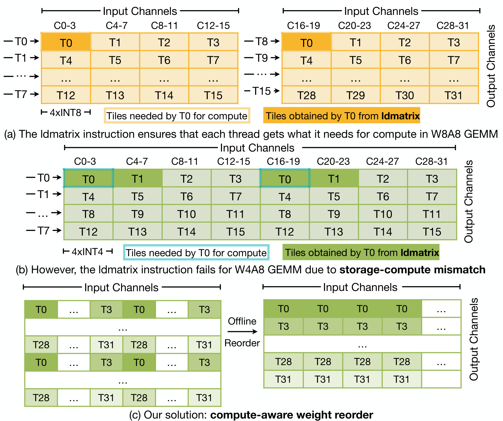
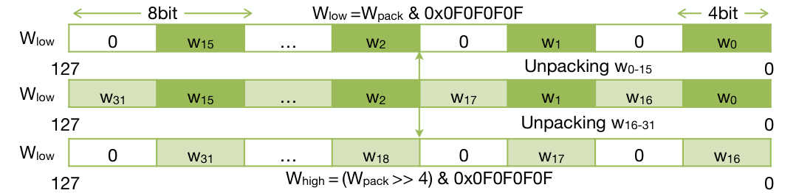
Attention在解码阶段占50%+ 的运行时间（batch=64时）。LLM解码的Attention本质上是批量GEMV操作，计算强度恒为1 MAC/element，内存带宽由KV cache访问主导。KV4相比KV8将峰值性能提升2倍。
QServe的KV cache管理采用per-head、动态量化（区别于vLLM/TensorRT-LLM的per-tensor静态量化），为每个head独立存储FP16 scale和zero point，在保持KV4低内存占用的同时维持精度。
通过将Attention的计算强度拐点后移，QServe确保KV4 attention始终处于memory-bound区域，使低比特量化有效提升吞吐。系统还支持page-based KV cache和in-flight batching。
端到端评估覆盖了7种广泛使用的LLM（Llama-3-8B/70B、Qwen1.5-72B、Mixtral 8x7B等），在A100和L40S上与TensorRT-LLM的FP16/W8A8/W4A16配置进行全面对比。
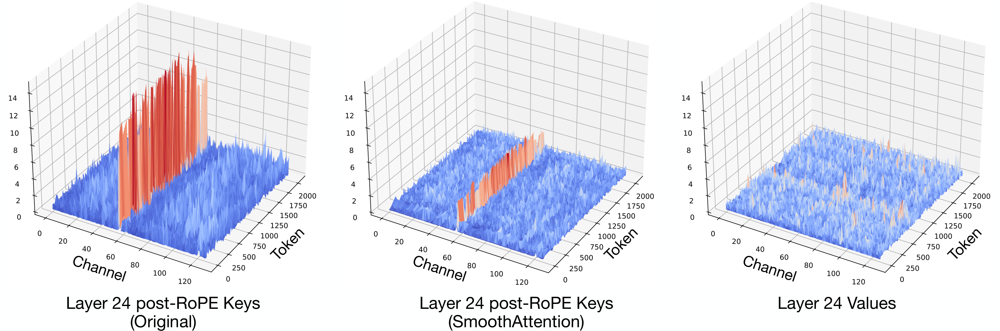
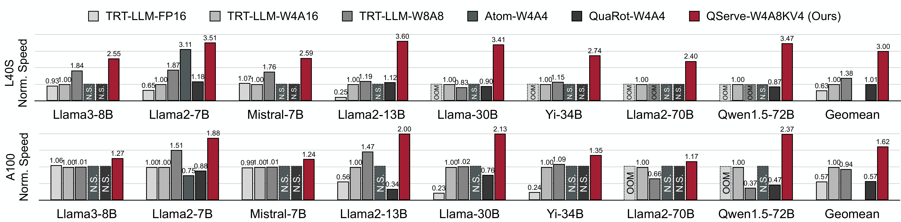
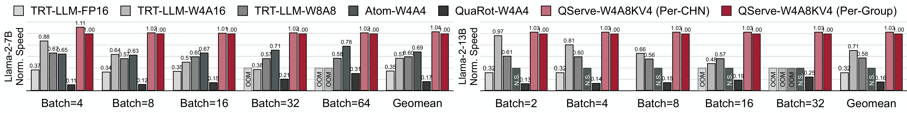
参考：https://arxiv.org/abs/2405.04532